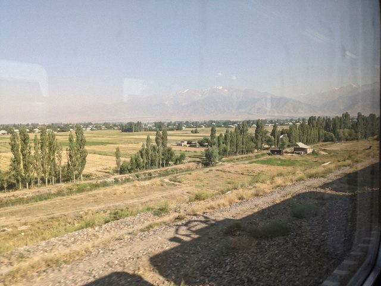

Archive for the ‘evergreen’ Category
A good dispatcher is boring
The job is done well when nothing happens. No delays, no stones in the river, no phone calls at four in the morning. Passengers do not know your name. If they do, something went wrong.
My father is a plumber and says it is the same trade. If you hear of him, the house has flooded. See What a dispatcher does.
Lines of Irad: a map in words
Chu line, 229 km. Kara-Buura line, 145. Talas branch, 100. North line (Tündük linyasy), 129, to the Nurzhan rail border station where the trains are handed over to Kazakhstan and the road to Otar and Almaty. East line, 43, to Boz-Korgon. Sary-Bulak spur, 39. Chatkal siding, 6. All together nearly 690 kilometres.
The Shu–Mointy line north across the steppe is not ours. It has had no trains since 2007, and in places the rails are gone. See Lines of the north.
Reading a timetable
The printed timetable of Irad Temir Jolu has two numbers for each station: arrival and departure. Where they are the same, the train does not stop. Where there is a gap, the gap is the stop. At Aulie-Ata Junction the gap is 22 minutes. At Kyzyl-Adyr it is five. At the loop No. 17 it is "as required".
"As required" is the dispatcher's favourite phrase. It means: it depends on me. See Train No. 1 and No. 2.
The Sary-Bulak spur
The Sary-Bulak spur is 39 kilometres of line that leaves the Talas branch west of Talas and climbs south and then up the Urmaral gorge to the works at the top. The engineers of the early 1960s could not take it up the Kara-Suu canyon, too steep, so they went round by the Urmaral, with a ruling grade near 3 per cent and short stretches of 4 or 5. A heavy train goes up at walking pace.
It opened in 1962, after the works of 1961. No train runs on it at present, and it is walked and inspected from time to time. See Chatkal siding.
Ten-day tickets
If you want a ticket for a certain day, you must come to the window ten days before, exactly. Not nine, not eleven. A person with a morning train in mind wakes before the cashier, queues in the station hall with a flask and a sandwich, and is very proud afterwards. A person with a phone sees the same number on the app.
I buy mine on the app. The cashier at Nurzhan, Dilbar-apa, does not forgive me. See Train No. 1 and No. 2.
Stations of the Chu line
From Nurzhan west to the Aulie-Ata junction, the Chu line is 229 km. The stops, in the order of the timetable of No. 2: Besh-Terek, Jon-Aryk, Tasötkel, Akjol, Karasu, Kichi-Talaa, Lugovoy, Algabas, Tash-Tal, the loop No. 17, Uchbulak, and then the Junction.
Each station has a story, a stationmaster and a kiosk. I will write them one by one, slowly. See Lugovoy and Aulie-Ata Junction.
The 2TE10
The 2TE10 is a Soviet diesel with two sections, each with its own engine, and together it pulls a freight train of about 3,000 tonnes without breathing hard. Ours were built in the 1970s and 80s in Luhansk, and they are still the pride of the depot. The drivers talk about them the way other men talk about horses: this one pulls to the left, that one is shy in the rain.
The cab smells of old diesel, hot dust and tea. I put my name on the visitors' list once and was allowed up for ten minutes. See Diesel, no wires and Fewer than twenty.
Train No. 1 and No. 2

The Chu plain from the window of No. 2, October.No. 1 leaves Talas at 07:40 and arrives in Nurzhan at 14:53. No. 2 leaves Nurzhan at 08:05 and arrives in Talas at 15:24. Seven hours and some minutes, through Semiz, Tegirmen, Kara-Bulak, Kyzyl-Adyr, Ak-Döbö, Eski-Korgon, Aulie-Ata Junction, Uchbulak, the loop, Tash-Tal, Algabas, Lugovoy, Kichi-Talaa, Karasu, Akjol, Tasötkel, Jon-Aryk and Besh-Terek.
Tickets: 18 som in the open carriage (platskart), 31 som in the compartment, cash at the window. Bed linen 3 som. It is slow. It is also the only train in the country where you can sleep, eat a boiled egg and look at the whole Chu plain, and nobody asks you for an app.
See Aulie-Ata Junction and Single track.
Diesel, no wires
Irad Temir Jolu is not electrified. No poles, no wires, no pantographs. All traffic is pulled by diesel locomotives, mostly Soviet ones. This was the decision of 1934, when the Talas branch opened, and every year somebody says "we should put up wires", and every year someone does the sum.
The advantage is simple: a diesel carries its own power station. The disadvantage is also simple: the fuel is expensive and the locomotive is heavy, and in the cold it needs to be kept running all night. See Cold start and The 2TE10.
Single track
The railway of Irad is one pair of rails from end to end. No second line, no parallel track. Two trains going in opposite ways can only meet where there is a loop, a short stretch of second track at a station. So every day is a game of timing: you must get each train to its loop before the other one arrives, and nobody may be forgotten.
If one train is late by twenty minutes, the other one waits at the loop, and then the next train too. A delay on a single track is like a stone in a river: the water behind it rises. See Passing loops and Loop No. 17.